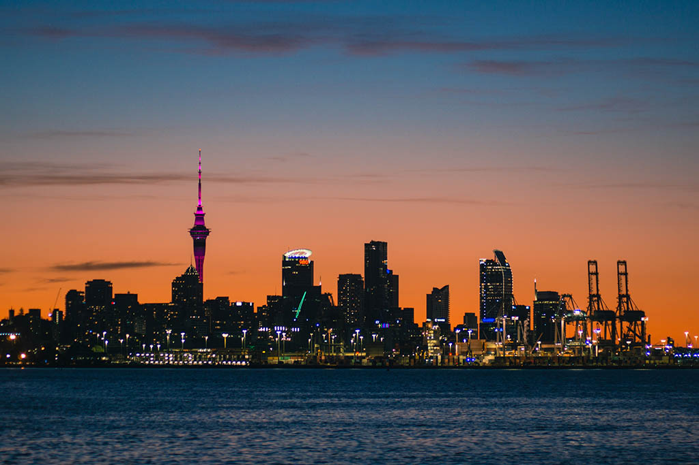
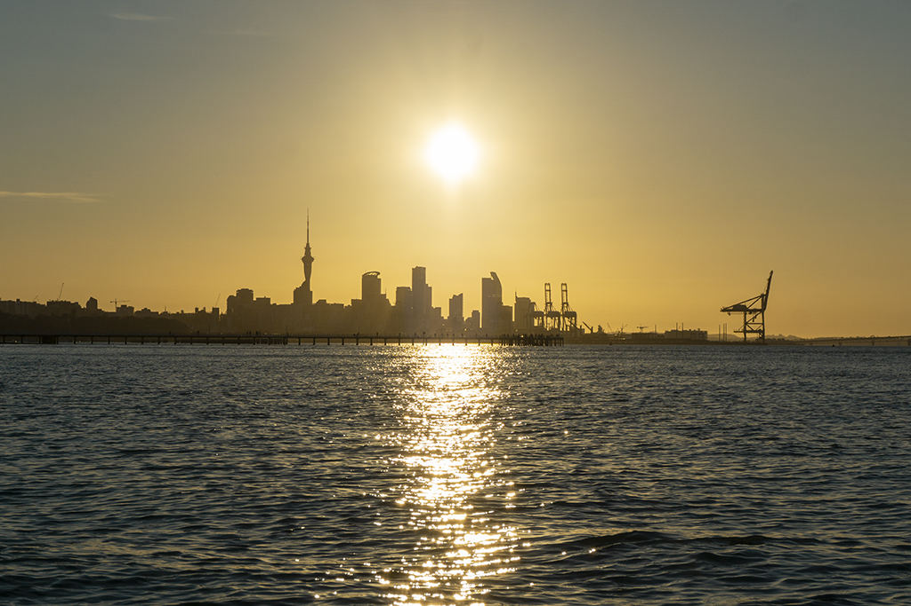
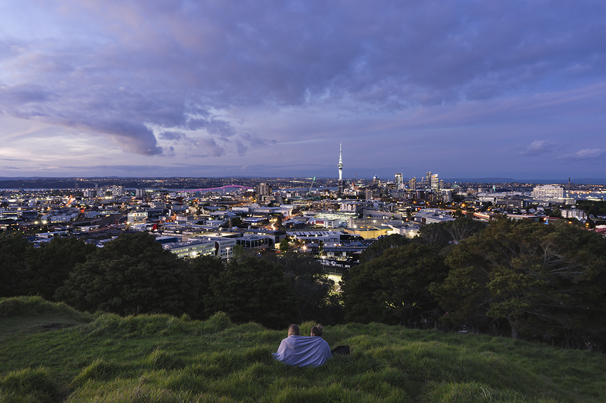
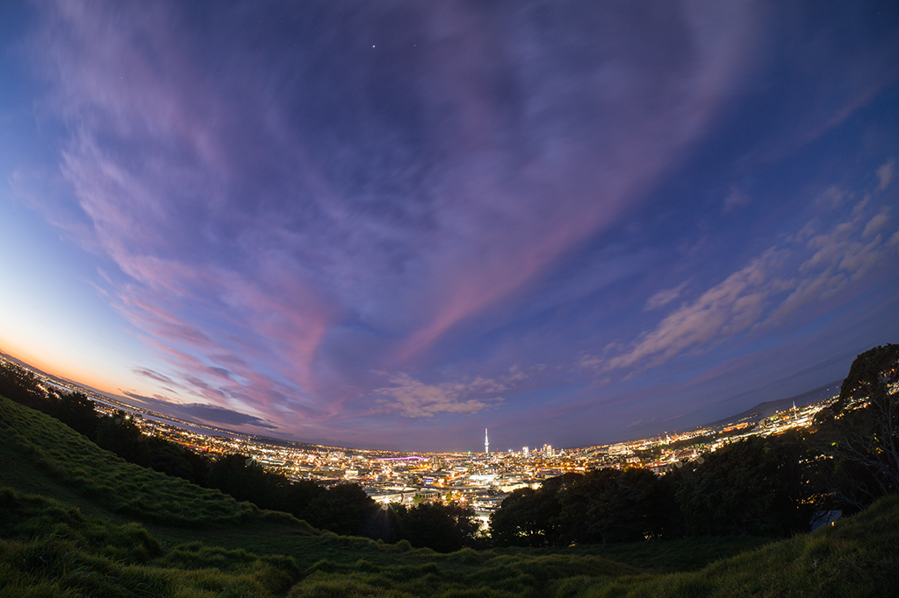
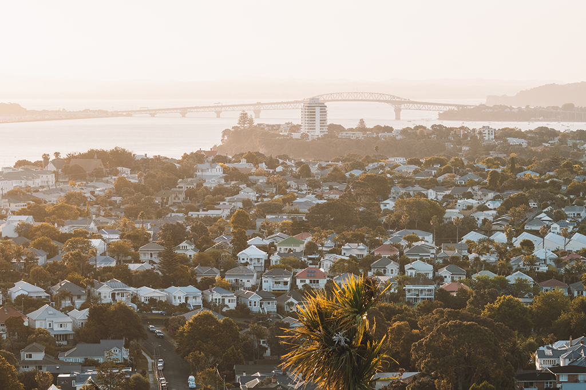

Auckland is New Zealand's most prosperous and most populous city, and in fact the scenery here is even more pleasant and breathtaking. So where are the best places to see Auckland city? Below I'll share some of the places I've been to that felt like a good place to see Auckland's cityscape.
1. Mission Bay
I think this is the best place to see the night view of Auckland city in the summer evening. There is a sandy beach, and many restaurants next to the sandy beach. After dinner, walk to Sea View Bridge, accompanied by the afterglow of the sunset, the lights of the city gradually turn on. If you like fishing, you can also fish on the Sea View Bridge.
 2. Mt Eden
Mount Eden is an extinct volcano with a height of 196 meters. It is the highest volcano in the Auckland terrestrial volcanic belt and one of the most important symbols of Auckland. On Mount Eden, there is a sign with the number of kilometers from some of the world's largest cities. The cone-shaped crater is at the foot of the summit, and the base of the crater is always populated by grazing cattle. From here, you can enjoy the amazing crater ruins, and the panoramic view of Auckland city and the two harbours.
 3. Mt Victoria
European settlers named the maunga Mt Victoria, after Queen Victoria. Another early European name for the maunga was Flagstaff Hill, after a signal station for the Port of Auckland was positioned on the summit in 1841. Takarunga / Mt Victoria has been a public reserve since 1880. Dotted around the summit of the maunga you will come across a number of colourfully painted mushroom features. These are in fact the vents for a water pumping station which lies underneath the surface of the maunga. Takarunga / Mt Victoria is a great place for stunning views across the Waitematā to the city centre and is also a great viewing place for watching ships arriving and departing.
 Contact me
Contact me